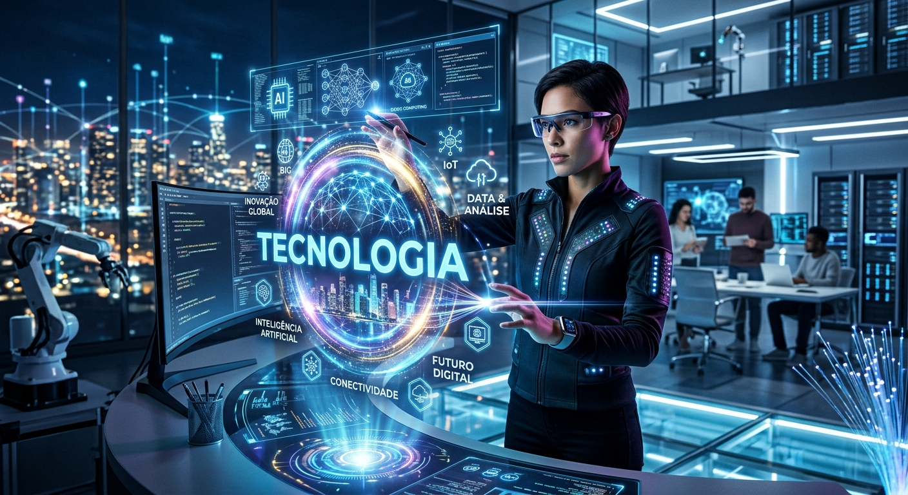
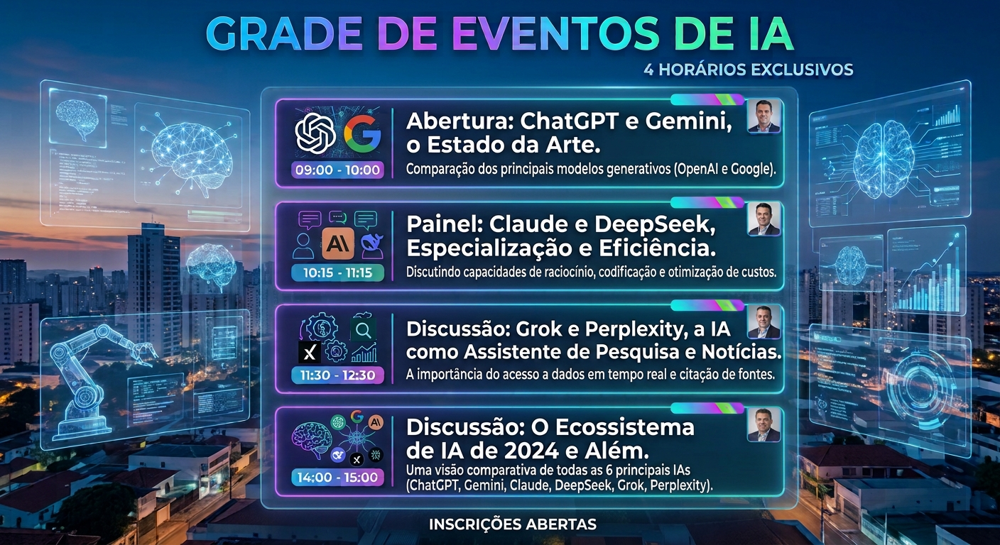

TECNOLOGIA QUE TRANSFORMA
Descrição de destaque do festival
Descrição de destaque do festival

PROGRAMAÇÃO

SOBRE
Prepare-se para mergulhar no universo da Inteligência Artificial em um encontro exclusivo que reúne os maiores nomes e ferramentas do mercado atual. Com uma programação intensiva dividida em quatro horários estratégicos, o evento oferece uma visão completa sobre o funcionamento, as diferenças e o futuro das principais plataformas generativas.